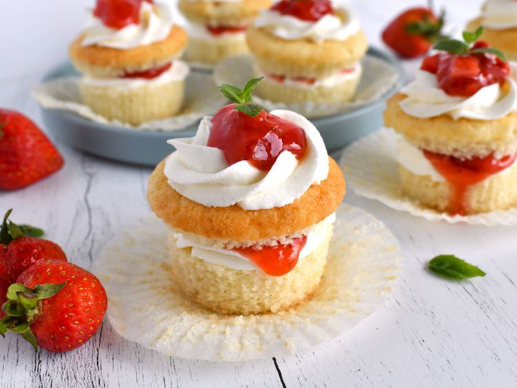

Strawberries and Cream Cupcakes

These strawberries and cream cupcakes are light as air, with a scrumptious strawberry and cream filling and topping. If you are short on time, you could absolutely skip the cutting-and-filling part of this recipe—and simply frost the tops of the cupcakes with the whipped cream and strawberries instead.
Ingridients
- Strawberries
- Cupcakes
- Filling and Topping
Steps
- Strawberries: Place strawberries and sugar in a small pot over medium-low heat. Bring mixture to a simmer, stirring often, and cook for 5 minutes.
- Stir cornstarch and water together in a small bowl or measuring cup. Stir cornstarch mixture into the strawberry mixture, and cook until thickened, 1 to 2 minutes. Remove pot from heat, and stir in lemon zest and lemon juice. Pour mixture into a heat safe bowl, and place uncovered into the fridge to chill. (Once mixture is chilled and no longer condensing, you can then cover the bowl.)
- Preheat the oven to 350 degrees F (175 degrees C). Line 2 cupcake pans with liners.
- Cupcakes: Sift together cake flour, baking powder, salt, baking soda, and nutmeg.
- Beat butter, oil, and 1 cup plus 2 tablespoons sugar until light and fluffy, 3 to 4 minutes. Add in egg whites, vanilla, and almond extract, and beat mixture on medium-high speed for another 3 minutes. Add in half of flour mixture and mix until just combined. Add in sour cream and milk; mix until just combined. Add in remaining flour mixture; mix until just combined.
- Pour batter into prepared cupcake pans, filling each liner no more than 2/3 full. Bake one pan at a time, until tops of cupcakes spring back when lightly touched, 22 to 26 minutes. Allow cupcakes to cool in the pan for 5 minutes before removing to a wire rack to cool completely, about 30 minutes Chill cupcakes in the refrigerator for about 1 hour. This will make them easier to cut and fill.
- Cream cheese whipped cream: Beat chilled cream cheese, powdered sugar, vanilla, and salt together until smooth. Add in 1/2 cup cold heavy cream, and mix on low until mixture is smooth. Add in remaining heavy cream; beat on medium-high until mixture holds stiff peaks. If desired, place mixture into a piping bag fitted with an open star tip (such as a Wilton® 1M). Place piping bag in refrigerator until ready to use.
- Remove cupcakes from refrigerator. Remove the liners and cut tops off cupcakes. Pipe a layer of whipped cream on bottom half of cupcakes; top with about 1 to 2 teaspoons strawberry mixture. Place tops of cupcakes back on, and lightly press down to adhere. Pipe more whipped cream on top of cupcakes and top with another 1 to 2 teaspoons strawberry mixture. Chill in the refrigerator for 30 minutes before serving.